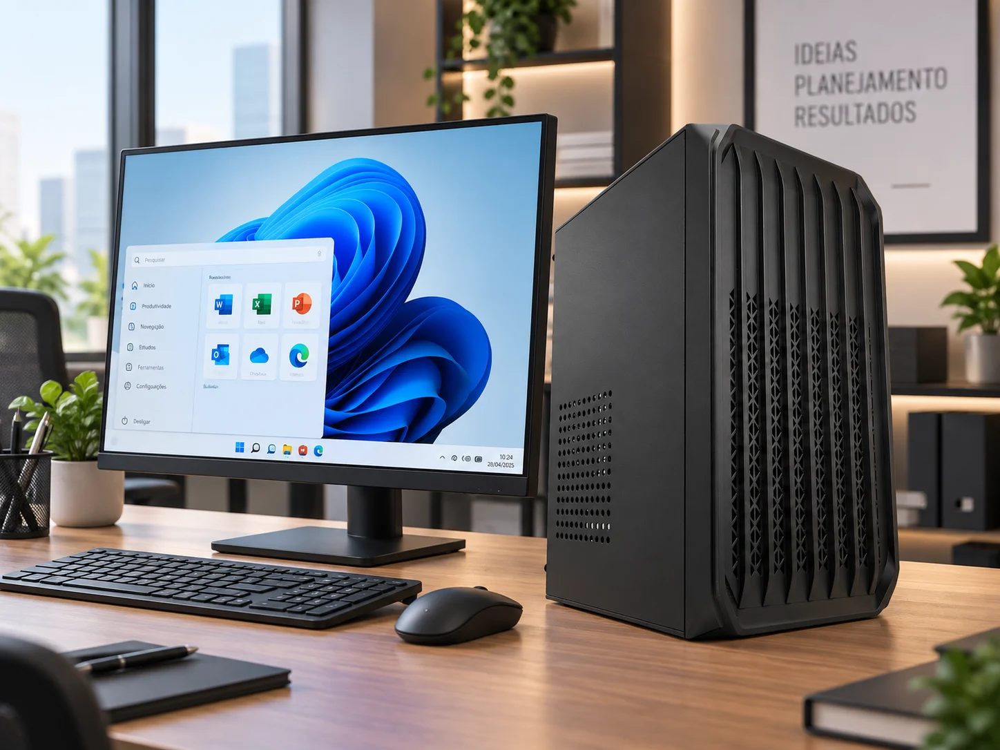
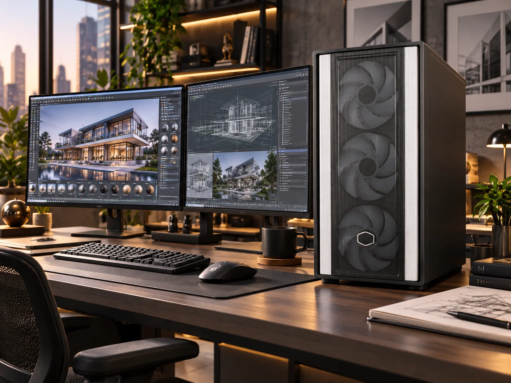
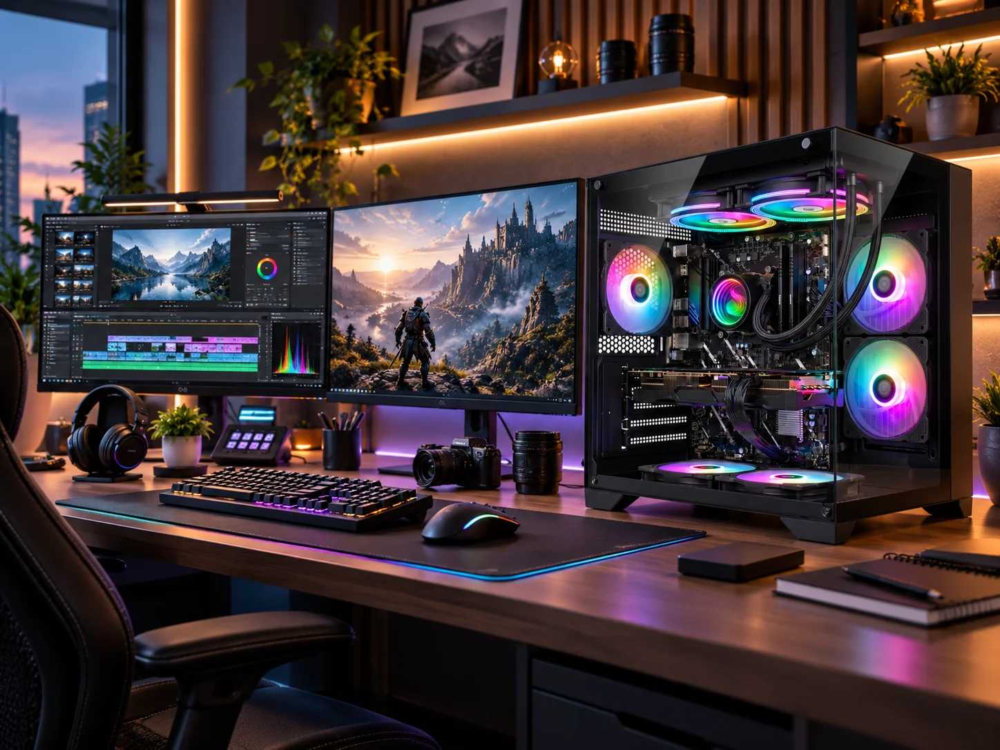

ENCONTRE O SEU BLUEPC
Qual computador combina com você?
Conheça nossas três categorias e escolha de acordo com a sua rotina.

Computador Office
Praticidade para tarefas do dia a dia: Pacote Office, estudos, navegação na internet e rotinas administrativas.
Conhecer PCs Office
Computador Workstation
Potência para programas exigentes de arquitetura, modelagem 3D e renderização, além de jogos pesados.
Conhecer Workstations
Computador Gamer
Desempenho para jogos pesados e programas de edição de vídeo e imagem. Para jogar e criar no mesmo setup.
Conhecer PCs GamerCONHEÇA A BLUEPC
Potência que impulsiona
o seu mundo.
A BluePC é uma marca especializada na montagem de computadores Gamer e Office, desenvolvida para quem busca alto desempenho, confiabilidade e excelente custo-benefício.
Combinando componentes de qualidade, montagem especializada e um atendimento dedicado, entregamos máquinas prontas para atender desde as exigências dos jogos até as demandas do dia a dia no trabalho ou nos estudos.
Seja para jogar, criar ou produzir, a BluePC é a escolha certa para quem não abre mão de performance, durabilidade e preço justo.
Conheça a BluePCQual computador é ideal para mim?
Para jogos, conheça nossas linhas Gamer. Para trabalho, estudos e rotinas administrativas, escolha a linha Corporativa. Para modelagem 3D, edição de vídeo e engenharia, conheça nossas Workstations. Nossa equipe ajuda você a escolher a configuração adequada.
Com quais componentes a BluePC trabalha?
Trabalhamos com processadores Intel e AMD Ryzen e placas de vídeo NVIDIA GeForce e AMD Radeon. Os componentes variam conforme o modelo: confira a configuração completa no anúncio ou com nossa equipe.
O computador já vem montado?
Sim. As máquinas são montadas por especialistas, passam por testes de estabilidade e desempenho e são embaladas para o transporte. Confira no anúncio os acessórios e o sistema operacional incluídos.
Como comprar meu BluePC?
Você pode consultar os modelos nos nossos canais de marketplace ou conversar com a equipe pelo WhatsApp. Preços, disponibilidade e condições são informados no canal de compra.
QUEM JÁ ESCOLHEU BLUEPC
Experiências que fazem a diferença.
“Fui muito bem atendida desde o primeiro contato com a BluePC. Me explicaram tudo com paciência e me ajudaram a escolher o melhor setup.”
“A máquina veio muito bem protegida, com ótima montagem e desempenho incrível.”
“A máquina chegou super bem embalada, com uma estrutura impecável e rodando perfeitamente.”
“O atendimento foi excelente do início ao fim, e a entrega chegou até antes do prazo. Recomendo de olhos fechados!”
Vamos encontrar seu próximo PC
Seu uso. Sua configuração.
Conte o que você precisa. A BluePC ajuda na escolha.